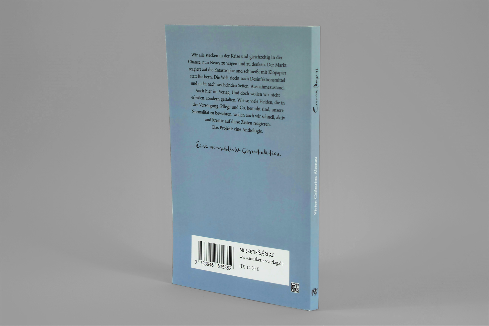
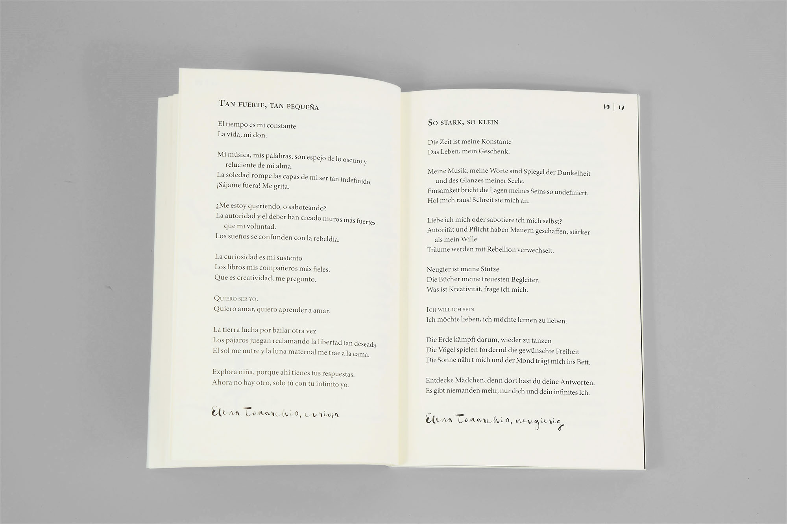
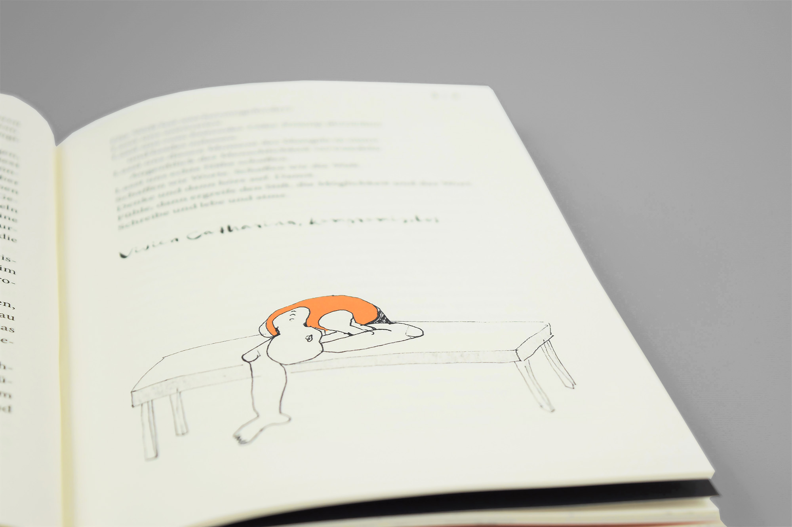
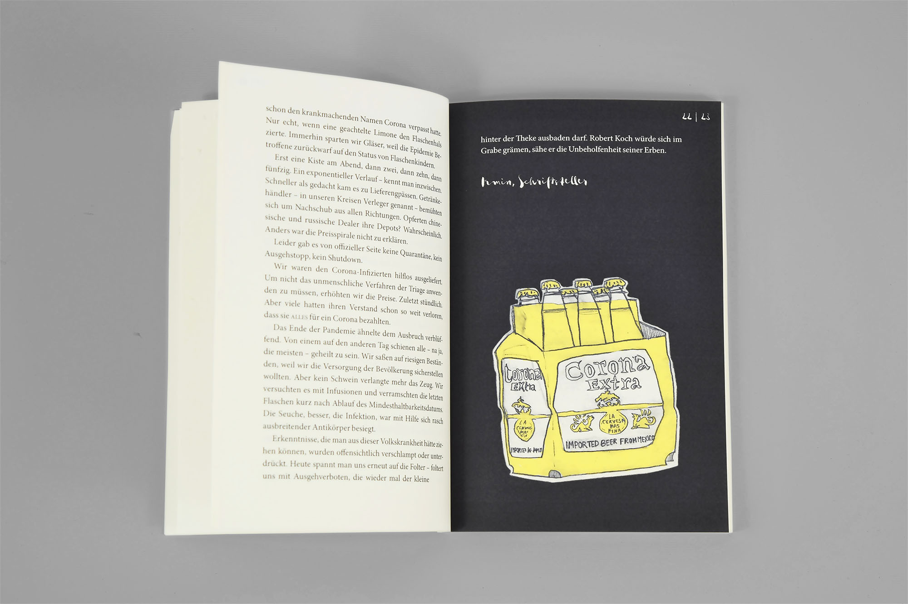

- Corona Papers ist eine Anthologie, in der die Autoren ihre aktuelle Situation in der Corona-Krise in verschiedenen Textformen in Worte fassen. Meine Rolle bei der Buchproduktion war der Satz und die Covergestaltung der Anthologie Corona Papers.
- Herausforderungen
- Die Anthologie besteht aus verschieden langen Texten von 35 verschiedenen Autoren, unter anderem auch in englischer, französischer, spanischer, italienischer und türkischer Sprache, jeweils mit der deutschen Übersetzung.
- Lösungsansatz
- Fremdsprachliche Texte habe ich auf jeweils einer Doppelseite angeordnet, sodass der klare Zusammenhang erkennbar ist. Die verspielte Schrift Gloss Drop gibt dem Buch eine persönliche Note. Bunte, vollflächig seitenfüllende Grafiken kontrastieren die tristen Krisenzeiten.
- Auftrag: Satz und Covergestaltung einer Athologie
- Kunde: MusketierVerlag GmbH Bremen
- Entstehung: Im Rahmen des Angestelltenverhältnisses
- Datum: Juni 2020




